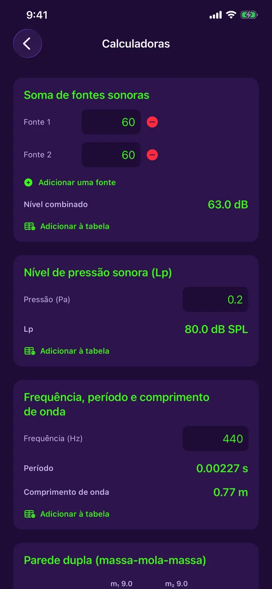

Recursos
Tudo o que você precisa para medir e corrigir um ambiente
O microfone e a câmera do iPhone, usados para medir, calcular e documentar a acústica de um local — sem sair do app, sem conexão.
Medir
Grátis: o necessário para medir no dia a dia
Decibelímetro ao vivo
Nível em dB em tempo real, com mínimo, média e máximo, e dois estilos de gráfico (Festival, Estúdio).
Calibração do microfone
Compare com um decibelímetro de referência e ajuste: cada medição indica se está calibrada ou estimada.
Analisador de espectro
Análise de frequências ao vivo (FFT) e classificação do som: puro, complexo ou ruído.
Tom puro
Para um tom puro, a frequência, o período e o comprimento de onda são calculados para você.
Histórico em cores
Cada sessão é salva com sua curva: verde, amarelo ou vermelho conforme o nível.
Tabela de medições
O registro de todas as suas medições, com filtro, ordenação e exportação em relatório PDF com gráficos.
Em detalhe
Cada ferramenta, de perto
Afinador
Afine de ouvido, ou deixe a agulha fazer isso.
- Violão/guitarra (5 afinações), ukulele (incluindo sol grave e barítono), violino, viola, violoncelo, bandolim e banjo
- Modo cromático para a voz e qualquer nota
- Agulha com cents ao vivo e uma escala de ajuste fino de ±10 cents, com vibração quando está afinado
- Leitura estabilizada que ignora medições erráticas, com indicador do nível do sinal
- Frequência de referência ajustável de 430 a 450 Hz, e gratuito

Decibelímetro, calibração e histórico
O decibelímetro mais simples de abrir no campo.
- Nível ao vivo, mínimo, média e máximo
- Calibração do microfone com um instrumento de referência, com o estado da calibração anotado em cada medição
- Histórico de sessões com sua curva em cores
- Compartilhe a imagem ou adicione à tabela de medições

Reverberação por frequência
Saber onde o ambiente tem problema, não só se tem.
- RT60 por banda de oitava, de 125 Hz a 4 kHz, em relação à meta do seu uso (escritório, estúdio, sala de reuniões, home theater)
- As bandas acima da meta são sinalizadas, com uma dica para os graves
- Curvas de absorção de cada material do ambiente, entre 10 materiais
- Modelo de Sabine e coeficientes típicos: uma estimativa indicativa

Do escaneamento à espuma a adicionar
Escaneie o ambiente e deixe o app fazer as contas.
- No iPhone Pro (LiDAR), uma varredura preenche as dimensões e a área de cada parede
- Sem LiDAR, digite as dimensões à mão: todo o resto funciona
- Esquema 3D isométrico do ambiente, incluído na tabela e no relatório PDF
- A quantidade de espuma acústica a adicionar para atingir a meta
- Medição do RT60 ao vivo com uma breve rajada de ruído

Mapa de ruído
Ver onde há barulho em um ambiente num piscar de olhos.
- Toque na planta do ambiente e meça cinco segundos em cada ponto
- Mapa de calor das zonas calmas e barulhentas
- Nível mais calmo, média (Leq) e nível mais barulhento
- Salvo na tabela de medições e no relatório PDF

Calculadoras acústicas
As fórmulas do ofício, sem papel nem calculadora.
- Soma de fontes sonoras: quantos dB juntas
- Nível de pressão sonora a partir da pressão em pascals
- Frequência, período e comprimento de onda
- Cada resultado é adicionado à tabela com um toque

Parede dupla
Estimar o isolamento de uma parede antes de construí-la.
- Cálculo massa-mola-massa a partir da massa de cada folha e da profundidade da cavidade
- Frequência de ressonância e isolamento por banda de oitava
- Com ou sem lã mineral, e folhas desacopladas como opção
- Estimativa indicativa, não um índice Rw/STC certificado

Tabela de medições e relatórios PDF
Tudo o que você mede fica organizado e compartilhável.
- Cada medição é adicionada a uma tabela central, filtrável por tipo
- Relatório PDF com gráficos e esquema 3D do ambiente
- Salve um gráfico em Fotos ou compartilhe com as ferramentas do iOS
- Tudo fica no seu aparelho: sem conta, sem servidor

Grátis ou Acoustic Detector Completo
| Grátis | Completo | |
|---|---|---|
| Decibelímetro ao vivo e calibração | ✓ | ✓ |
| Analisador de espectro | ✓ | ✓ |
| Afinador | ✓ | ✓ |
| Tabela de medições e exportação em PDF | ✓ | ✓ |
| RT60 do ambiente e espuma a adicionar | — | ✓ |
| RT60 por banda de oitava e absorção | — | ✓ |
| Escaneamento LiDAR do ambiente | — | ✓ |
| Mapa de ruído | — | ✓ |
| Calculadoras e parede dupla | — | ✓ |
“Acoustic Detector Completo” é uma compra única de CA$ 4,99, sem assinatura.
Pronto para ouvir o seu ambiente?
O Acoustic Detector está disponível na App Store, para iPhone. Grátis, com uma compra única opcional.
Baixar na App Store